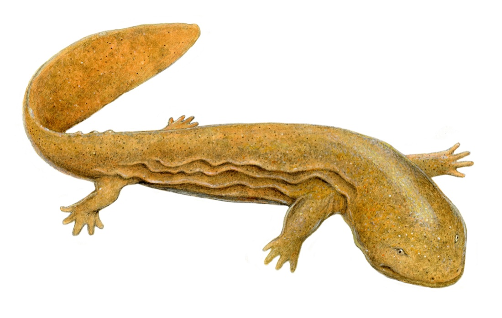

Step 1 of 2 · build your report

Working lands for wildlife · southern waters
Tell us about you
and your area
We use this to tailor the conservation report — species, partners, water quality and barriers for exactly the area you care about.
About you
Your area of interest
Pick one — draw it, upload it, or choose an existing boundary.
Drop a shapefile here
Zipped .shp with .dbf and .prj, or a .geojson / .kml. Max 25 MB.
Choose file
Region type
Counties and watersheds are limited to the Southern Waters Framework operational boundary (dashed outline on the map). Watersheds come from the USGS Watershed Boundary Dataset; counties from Esri's US counties layer.
✎ Polygon
? Editing tips
Click the map to start drawing
Drawing requires a pointer. Keyboard users: choose Select a region or Upload shapefile instead.
No area selected yet
Querying watersheds…